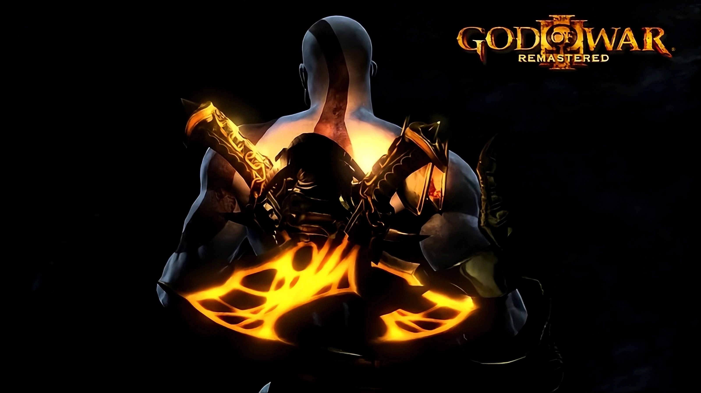
Kratos
Kratos, o Fantasma de Esparta, é um guerreiro marcado pela tragédia e impulsionado por uma fúria incontrolável. Antigo general espartano, ele foi enganado por Ares e acabou destruindo sua própria família.
Após anos buscando vingança e destruindo o panteão grego, ele agora habita as terras gélidas de Midgard, lutando não mais por ódio, mas para sobreviver e proteger seu filho Atreus.
Dica: Segure o botão esquerdo do mouse e arraste o modelo 3D ao lado para rotacioná-lo. Use o scroll do mouse para dar zoom e o botão direito do mouse para movimentar a câmera.
Armas de Kratos
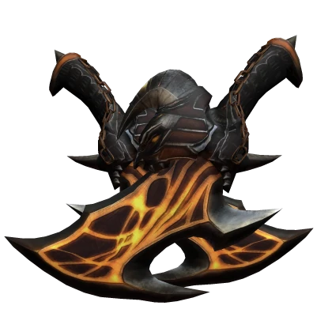
Blade of Exile
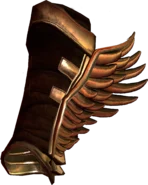
Boots of Hermes

Claws of Hades
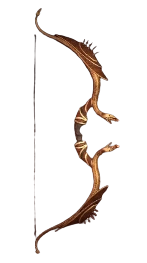
Bow of Apollo
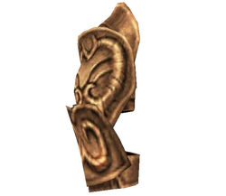
Golden Fleece
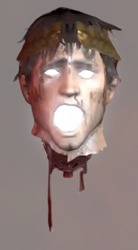
Helios's Head
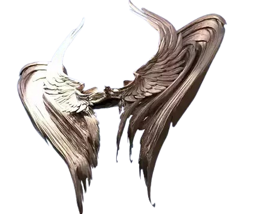
Icarus Wing

Nemean Cestus

Nemesis Whip

Trident of Poseidon
Forum de Discussao
Discuções Recentes
KratosDu_Grau
O Kratos é Bahiano ou Cearense?
Estava jogando GOW III esses dias e me deparei com essa dúvida... O Kratos provavelmente é nordestino devido à sua aparência e comportamento, mas, de qual região? Seria ele bahiano ou cearense?
Respostas
Ícaro Botelho
Olha, disso não sei, mas sinceramente estou decepcionado com esse fórum... ELES ROUBARAM MINHAS ASAS E COLOCARAM COMO ARMA DO KRATOS!!! INACEITÁVEL!
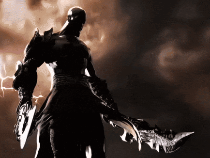
Joelson_AuraFarmer
Rapaz, Kratos não é nem baiano nem cearense… esse homem claramente é do interior de Goiás. O cara passa metade do jogo cultivando raiva e a outra metade criando menino no mato. Isso aí é puro espírito de fazendeiro lendário. Inclusive, se dessem uma enxada pro Kratos, ele zerava Stardew Valley em 2 horas.
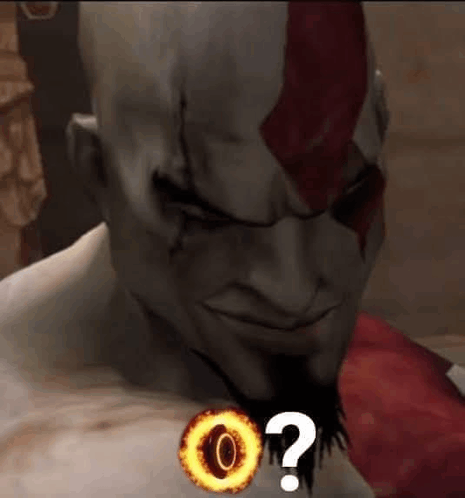
Omeno_Olhaqui
Kratos não conversa porque diálogo não dá XP?
Estava jogando GOW III e percebi uma coisa: o Kratos tem exatamente zero habilidade de diálogo. Todo problema que aparece, ele já parte direto pra violência, gritaria e destruição de propriedade pública divina. Será que se alguém tivesse oferecido um café e cinco minutos de terapia, metade do Olimpo ainda estaria de pé?
Respostas
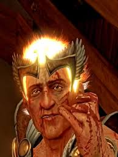
Hermes_CorreMuito
Mano, conversar com o Kratos é impossível. O cara nem espera a cutscene terminar direito e já tá apertando triângulo na tua cara. Se ele entrasse numa reunião de condomínio, em 3 minutos o prédio virava ruína histórica.
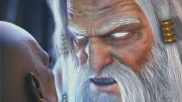
Zeus_PagandoPensao
O problema é que ninguém no Olimpo tinha RH. Era só intriga, traição e parente tentando matar parente. O Kratos só foi o funcionário que pediu demissão do jeito mais sincero possível: derrubando a empresa inteira.
Ares_SigmaBoy
Kratos não tinha que conversar por** nenhuma. O cara era espartano, não atendente de SAC do Olimpo. Eu dei duas lâminas pegando fogo pra ele justamente pra resolver problema sem reunião, sem textão e sem choradeira. Aí o maluco fica pu** porque eu usei ele como arma? Ué, cara***, eu sou o deus da guerra, não psicólogo de careca traumatizado.